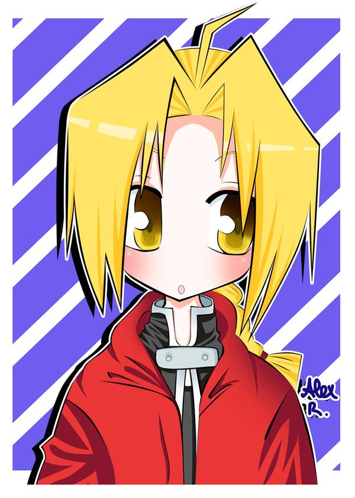
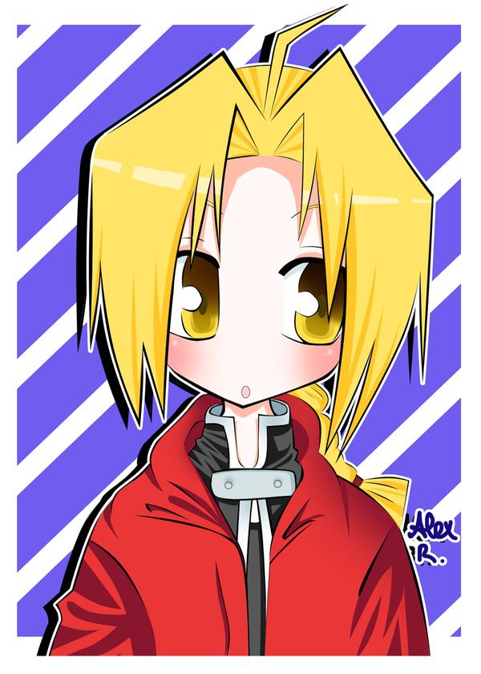

She is a wonderful daughter and a good friend to all of us, her loving personality is what made me appreciate her creativity even more. Her talent in creating artworks amazes me; approximately it will only take her 5 - 10 minutes to draw someone's face, into an anime character. And as one of her loved ones, I'm lucky enough to receive her personalized cards on any occasion. This page will show some artworks and videos that she produced. And also some snippets of her life as a cat mom.
At the age of 10, She dedicated her time in learning how to draw her favorite anime characters.
At the age of 13, She started selling her arts as poster, bookmarks and personalized caricatures.
At the age of 15, She joined a graphic design program in an organization called after school matters.
At the age of 17, She received recognition for the best cover design in 2009 from anime central midwest and her design got featured in the convention's magazine.
(Anime Central)


 



Her love for her pets are so unconditional. She gives time to them 24/7. She wakes up very early just to feed the cats and she recently adopted a kitten from the shelter. Alex makes sure to play with them every night and will always look for best options for her pets to live the most comfortable life.
I love how she edit her videos and produce her videos with finalcut.
This posrtion will have messages from family and friends :)